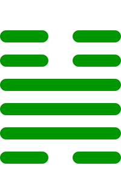

第三十二卦
恒卦

卦辞
亨，无咎，利贞，利有攸往。
恒卦象征恒常、持久与稳定。卦辞意为：亨通，没有灾害，利于坚守正道，利于有所往。恒卦教导我们要保持恒心和毅力，坚持不懈。
彖传
恒，久也。刚上而柔下，雷风相与，巽而动，刚柔皆应，恒。恒亨无咎，利贞，久于其道也。天地之道，恒久而不已也。利有攸往，终则有始也。日月得天而能久照，四时变化而能久成，圣人久于其道而天下化成。观其所恒，而天地万物之情可见矣。
彖传说：恒，是恒久。刚上而柔下，雷风相与，巽而动，刚柔皆应，恒。恒亨通无灾害，利贞，是久于其道。天地之道，恒久而不止。利于有所往，是终则有始。日月得天而能久照，四时变化而能久成，圣人久于其道而天下化成。观察其所恒，天地万物的情状就可见了。
象传
雷风，恒。君子以立不易方。
象传说：雷风，就是恒卦。君子应当效法这种精神，立定不改变的方向。雷风象征持久，要坚持原则。
爻辞
初六：浚恒，贞凶，无攸利
深求恒常，坚守正道凶险，无所利。
初六爻位于最下方，过于急切。过于深入追求恒常，坚守正道也凶险，无所利，表示急于求成。
九二：悔亡
悔恨消亡。
九二爻得中得正，无悔。悔恨消亡，表示恒心坚定，没有悔恨。
九三：不恒其德，或承之羞，贞吝
不恒其德，或承受羞耻，坚守正道困难。
九三爻阳刚得位，德不恒。不能恒守德行，可能承受羞耻，坚守正道困难，表示德行不坚定。
九四：田无禽
田无禽。
九四爻接近君位，无所获。田地没有禽兽，表示劳而无获，需要耐心等待。
六五：恒其德，贞，妇人吉，夫子凶
恒其德，坚守正道，妇人吉祥，男子凶险。
六五爻居中尊位，德恒定。恒守德行，坚守正道，对妇人吉祥，对男子凶险，表示不同角色。
上六：振恒，凶
振恒，凶险。
上六爻位于极点，过于波动。动摇恒常，凶险，表示不能保持恒定。